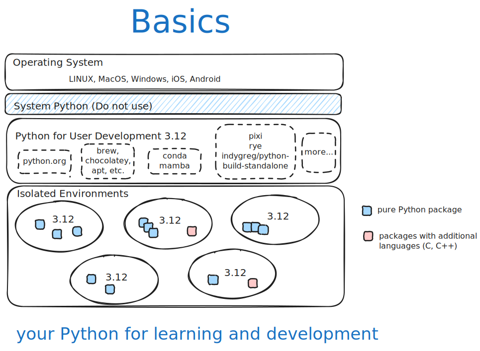

Consumers: Creators, Makers, and Learners
Users want to learn Python and create applications for personal use.
Basics

Start simple and grow
- Abby:
install python - Betty:
install python and add a favorite tool - Chris:
create new project with python and consume some packages - Donna:
use an existing project and modify it for my needs
User Stories by Increasing Needs
Abby: New to Python and New to Programming
- Need to install Python
- Try the REPL
- Write a simple script
Betty: Add an improved REPL for learning
- Need to install Python
- Try the REPL
- Write a simple script
- Plus install IPython
Chris: Create a new project but not sharing it on PyPI
- Install Python
- Add dependencies
- Write code
- Run the project
- Add optional dependencies for docs and tests
Donna: Use an existing project that was cloned from GitHub
- Clone an existing project
- Install Python
- Install dependencies
- Run the project
- Install optional dependencies for docs and tests
- Modify project by adding additional dependencies